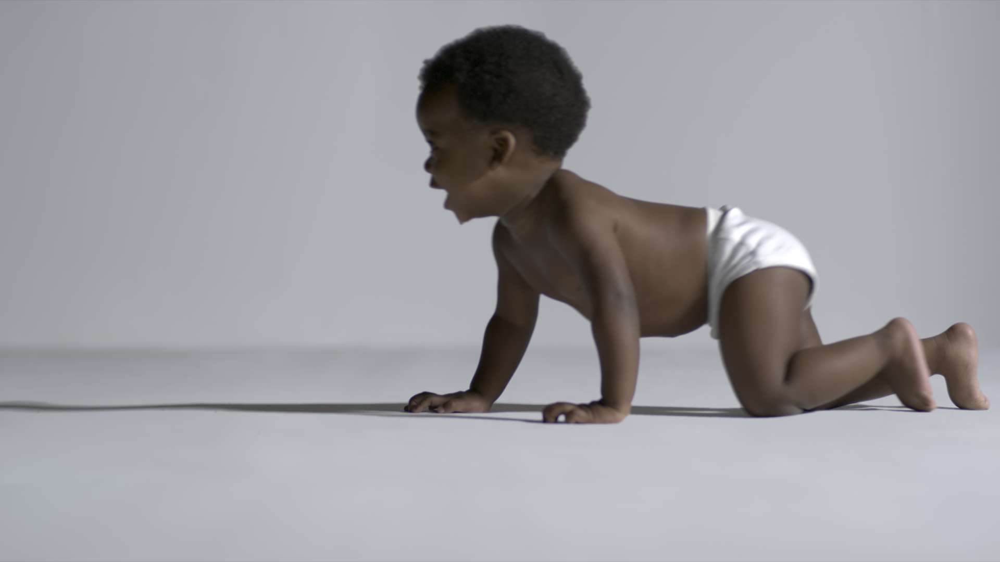
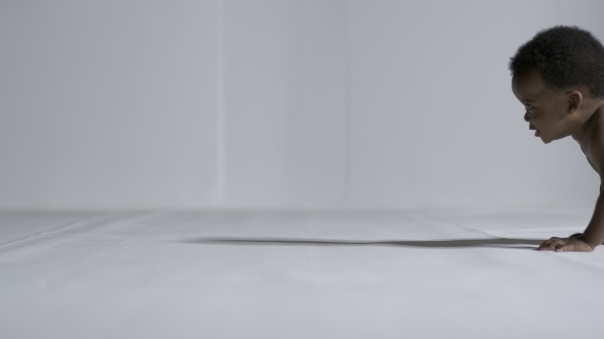
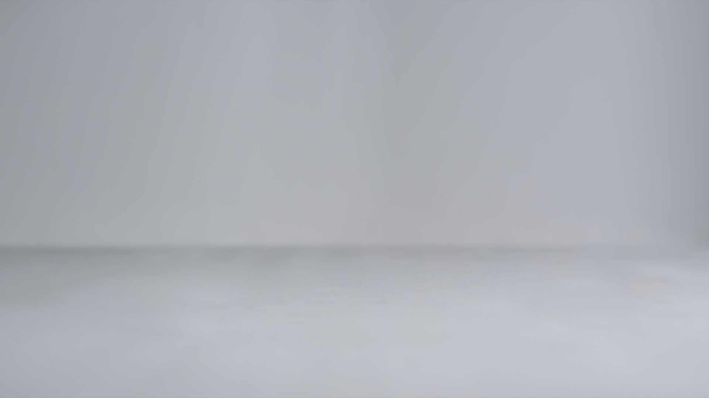
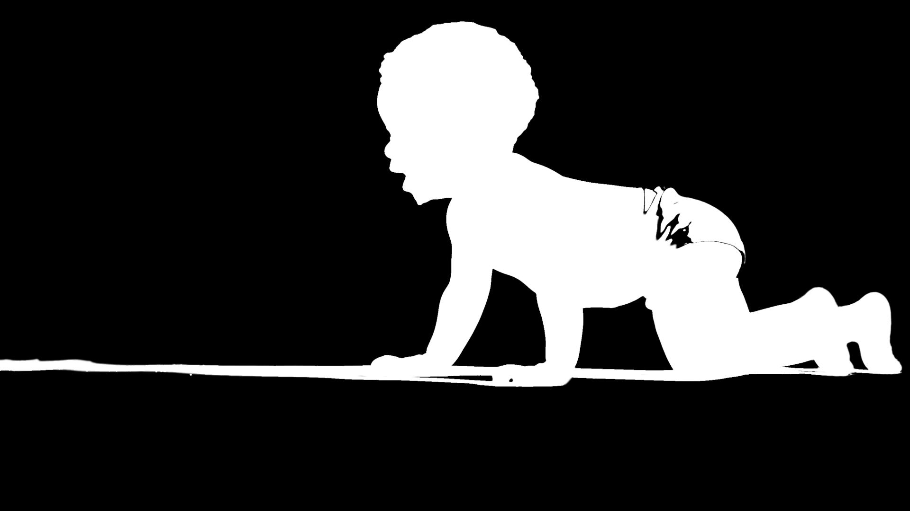

---

layout: default

---
<section class="spaceplug_breakdown">
	<h2 class="portfolio_headings">Spaceplug Breakdown</h2>

	<p>Compositing a baby onto a clean background (removal of creases etc.) applying methods of keying and rotoscoping.</p>

	<div class="spaceplug_image">
		
		<figcaption>Final image composit of shot.</figcaption>
	</div>

	<h3 class="portfolio_headings">Plate Preparation</h3>

	<p>Firstly, as the shot is a lockoff and a clean plate is available (a plate without the foreground actor), it is possible prepare the plate on a single frame. The plates will be denoised for most of the comp work; the grain will be added back on after the final composit to ensure the noise present in the raw plate is replicated across the entire sequence. </p>

	 <div class="spaceplug_image">
	 	
	 	<figcaption>Plate received from camera.</figcaption>
	 </div>

	 <div class="spaceplug_image">
	 	
	 	<figcaption>Cleanup of a single frame of the sequence.</figcaption>
	 </div>

	<h3 class="portfolio_headings">Keying and Roto</h3>

	<p>Using Primatte and some channel math, it is possible to key the majority of the actor's body across the sequence, including the diaper which has significantly less contrast when compared to the background.</p>

	 <div class="spaceplug_image">
	 	
	 	<figcaption>Using a number of keys, it is possible to pull a general alpha matte of the baby.</figcaption>
	 </div>

	 <p>However, some manual rotoscoping is required for the areas that are not possible to be keyed out, especially near the edges of the diaper.</p>

	 <div class="spaceplug_image">
	 	
	 	<figcaption>Across the sequence, several areas of the diaper are rotoscoped.</figcaption>
	 </div>

	<p>Once the alpha matte holds for the actor and is consistent across the sequence, a slight edge despill is applied and the actor is composited back onto the clean plate.</p>

	
</section>
